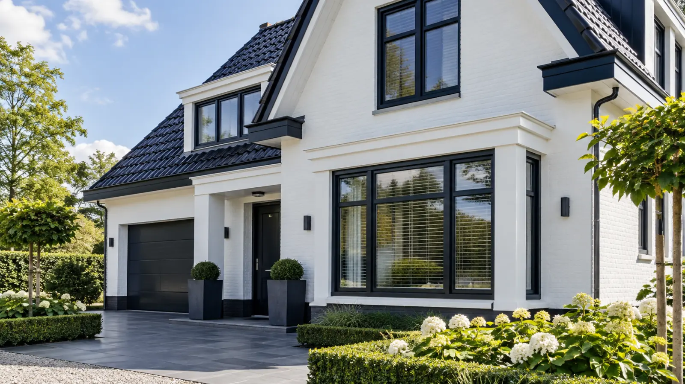
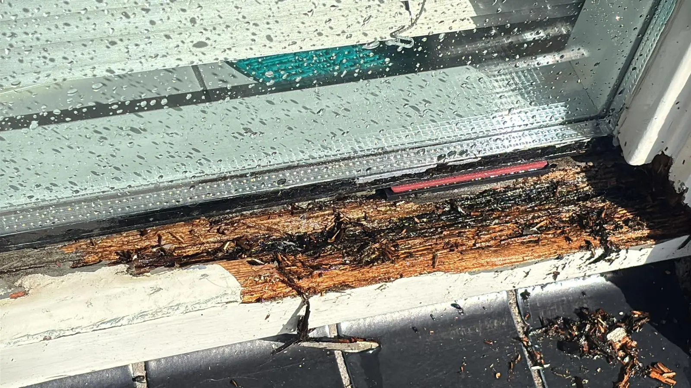
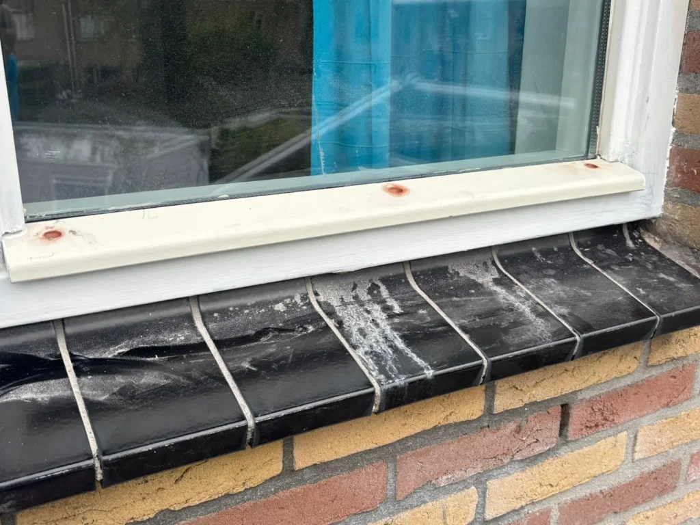
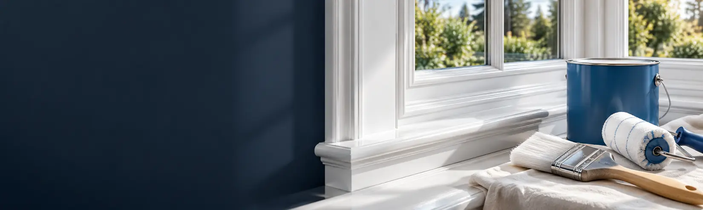
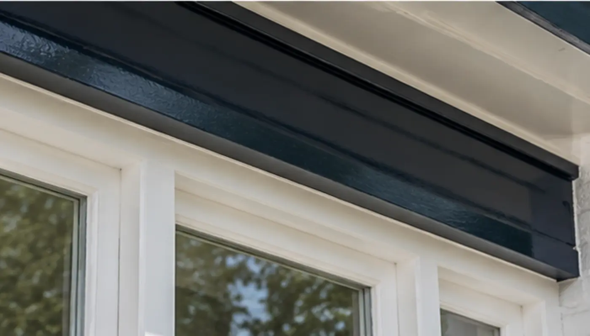
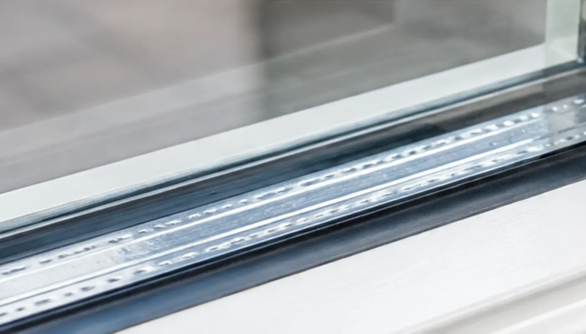
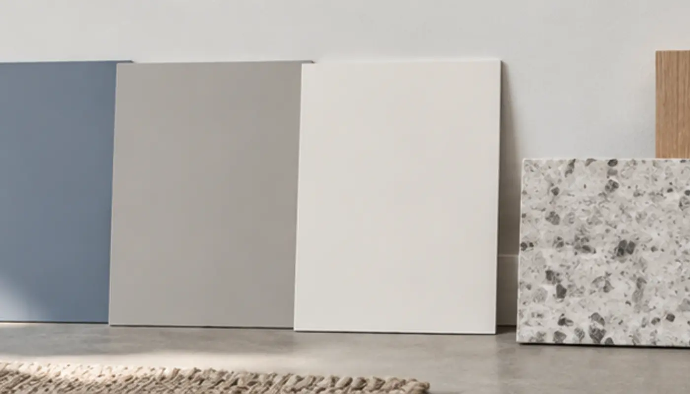

Schilder in Zutphen en omgeving
Uw huis in goede handen.
Binnen- en buitenschilderwerk, houtrotherstel en behang. Kevin kijkt eerst goed, adviseert eerlijk en laat de werkplek elke dag netjes achter.
5,0 op Google uit 3 reviews



Uit de praktijk, Zutphen
Houtrot in een raamkozijn, duurzaam hersteld.
Goed schilderwerk is meer dan een nieuwe kleur. De staat van de ondergrond, de juiste voorbereiding en passende materialen bepalen hoe lang het resultaat mooi blijft.
Daarom begint Kevin waar het hout zwak is. Rot eruit, vakkundig herstellen, en pas daarna verf. Zo blijft uw kozijn jarenlang strak.
Binnen, buiten en alles daartussen.
Van een strakke wand in de woonkamer tot nieuwe glazen in een oud kozijn. U heeft één vakman voor het hele huis.
-

Ook spuitwerk voor een egaal resultaat.Binnenschilderwerk
Strakke wanden, plafonds, deuren en kozijnen.
-

Met professionele verfproducten.Buitenschilderwerk
Duurzame bescherming en een frisse uitstraling voor kozijnen, deuren en boeidelen.
-
Bekijk het project
Houtrotrenovatie
Vakkundige reparatie en herstel van aangetast houtwerk.
-

Glas en verf in één hand.Glaswerk
Glas vervangen en plaatsen, passend bij kozijn en schilderwerk.

Ook voor de afwerking binnen
- Spuitwerk
- Een strak en egaal resultaat op diverse ondergronden.
- Behangwerkzaamheden
- Zorgvuldig behangen voor een strakke, sfeervolle wand.
- Glasweefselbehang
- Sterke, strakke en overschilderbare wandafwerking.
- Persoonlijk advies
- Praktisch advies over kleur, materiaal en onderhoud.
15+
jaar ervaring in het schildersvak, voor particulieren en bedrijven.
Een mooi resultaat begint bij goed kijken.
Kevin bespreekt vooraf wat er nodig is, houdt de lijnen kort en zorgt dat de werkplek aan het einde van de dag netjes wordt achtergelaten. U belt gewoon met Kevin zelf.
- Persoonlijk contact
- Eerlijk en praktisch advies
- Duidelijke offerte en planning
- Verzorgde oplevering
Wat klanten zeggen
5,0 op Google, 3 reviews
"Prima schilder goede materialen snel voordelig een aanrader"
"TOP bedrijf"
Dichtbij, rond Zutphen.
Kevin werkt binnen ongeveer 30 kilometer rond Zutphen, onder meer in:
Zutphen / Warnsveld / Eefde / Gorssel / Brummen / Lochem / Vorden / Deventer / Dieren / Doesburg / Voorst / Almen / Harfsen / Steenderen / Hengelo (Gld)
Klaar voor een frisse uitstraling?
Vertel kort om welk schilderwerk het gaat. Kevin denkt graag met u mee en geeft eerlijk advies over mogelijkheden, planning en prijs.
Bel 06 30 05 38 79- Adres
- Stokebrand 444, 7206 ER Zutphen